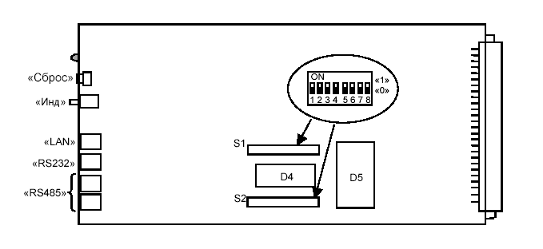

Тема №7. Устройство цифровых систем телекоммуникаций
Занятие №8. Настройка первичного мультиплексора с блоком КУ-S.
Учебные вопросы:
Литература:
- Многоканальные системы передачи (часть 2). Учебно-методическое пособие «Аппаратура МКСП с ЧРК». – Мн.: БГУИР, 2010.
- Учебно-наглядное пособие «Альбом схем аппаратуры МКСП». – Мн.: БГУИР, 2010.
- Касанин С.Н., Дюжов Г.Ю. Субботин С.Г. Методическое руководство «Цифровая система передачи MEGATRANS-3M». – Мн., БГУИР, 2010.
Компьютерные программы, наглядные пособия и технические средства обучения:
1.Подготовка оборудования к работе.
Перед тем, как приступить к работе, необходимо с помощью переключателей S1 и S2 на печатной плате блока КУ-S произвести начальные установки. Расположение переключателей S1 и S2 приведено на рисунке 1.
Рисунок 1 – Расположение переключателей S1, S2 на печатной плате блока КУ-S
Описание переключателей.
S1.1 – резерв. Используется для запуска программы Утилита.
S1.2 – вывод ежесекундной статистики в консоли о загрузки процессора
S1.3 – установка типа изделия.
S1.4 – установка количества слотов в каркасе.
S1.5 – установка количества слотов в каркасе.
S1.6 - установка количества слотов в каркасе.
S1.7 – установка «заводских установок» для блоков передачи данных.
S1.8 – установка «заводских установок» для транспортной части программы.
S2.1 – включение канала передачи ppp0 по 1-му каналу ТЛМ («национальные биты»)
S2.2 – включение канала передачи ppp0 по 1-му каналу ТЛМ («национальные биты»)
S2.3 – включение канала передачи ppp0 по 2-му каналу ТЛМ («национальные биты»)
S2.4 – включение канала передачи ppp0 по 2-му каналу ТЛМ («национальные биты»)
S2.5 - резерв
S2.6 - резерв
S2.7 - резерв
S2.8 – включение работы консоли
Таблица 2. Количества слотов.
Количество слотов |
S1.4 |
S1.5 |
S1.6 |
|
21 |
Выкл |
Выкл |
Выкл |
|
23 |
Выкл |
Выкл |
Вкл |
|
20 |
Выкл |
Вкл |
Выкл |
|
6 |
Выкл |
Вкл |
Вкл |
|
17 |
Вкл |
Выкл |
Выкл |
|
Резерв |
Вкл |
Выкл |
Вкл |
|
Резерв |
Вкл |
Вкл |
Выкл |
|
Резерв |
Вкл |
Вкл |
Вкл |
Таблица 3. Тип изделия.
Тип изделия |
S1.3 |
|
МП |
Выкл |
|
КЦС |
Вкл |
Установка переключателей.
1) Переключатель S1
- установить переключатели S1.1, S1.2, S1.3, S1.4, S1.5, S1.6, S1.7, S1.8 – в положение OFF.
2) Переключатель S2
- установить движками переключателя запись и прием канала ТО в ли-нейном сигнале:
- S2.1, S2.2, S2.3, S2.4 - в положение ON. (в положении OFF – записи и приема канала ТО в линейном сигнале нет).
- установить переключатели S2.5, S2.6, S2.7 – в положение OFF.
- установить переключатель S2.8– в положение ON.
3) Сброс всех записей блока в начальные заводские установки
- установить переключатели S1.7 и S1.8 – в положение ON
- подать питание на КУ-S
- сделать паузу в 5-10 сек. т. е. дождаться полного запуска программного обеспечения БК.
- выключить питание
- установить переключатели S1.7 и S1.8 – в положение OFF.
- установить включение звуковой сигнализации при аварии оборудования – движок переключателя S2.8 перевести в положение «ON».
S1.7 – сброс всех проведенных коммутаций в блоках в положении ON
S1.8 – сброс всех IP – установок в положении ON
S2.8 – в положении ON/OFF разрешает/запрещает доступ к блоку с компьютера.
Описание интерфейсов и управления оборудованием.
Блок КУ-S функционирует:
- с программным обеспечением (ПО) «Супертел-NMS», «Супертел-LT» (маркировка ППЗУ «SNMP v X.XX.XX (версия)»);
(устанавливается только в оборудование КЦС)
– с ПО «СуперТел- ТМ» (маркировка ППЗУ «ТО v X.X (версия)»).
Подключение к системе ТО
1) Подключение к сети по протоколу SNMP осуществляется:
- посредством интерфейса LAN для подключения блока к локальной сети:
- с помощью сетевого кабеля «Q-LAN-ETHERNET» («крестовой») - для
- соединения с ПК;
- с помощью сетевого кабеля «Q-ETHERNET» («прямой») - для соединения с устройством HUB;
- посредством интерфейса RS-232-C - с помощью кабеля «РС» ТАИЦ.685621.020 для начального конфигурирования блока;
- посредством интерфейса RS.485 - с помощью кабеля «RS.485» ТАИЦ.685621.020 аналогичное оборудование соединяется друг с другом и подключается к одноименным розеткам блока.
2) Подключение к сети «СуперТел-ТМ» осуществляется:
- посредством интерфейса RS-232-C - с помощью кабеля «РС» подключается рабочая станция - ПК;
- посредством интерфейса RS.485 - с помощью кабеля «RS.485» аналогичное оборудование соединяется друг с другом и подключается к одноименным розеткам блока.
Каждый КУ-S содержит два сетевых интерфейса:
- Ethernet 10/100 (разъём «LAN»),
- ТЛМ 2400 бод (разъём «RS485»).
Для работы блока КУ-S необходимо задать параметры:
- lan0 – идентификатор Ethernet интерфейса.
- ppp0 – идентификатор ТЛМ интерфейса.
Для каждого сетевого интерфейса (CИ) применимы понятия:
- MAC-адрес,
- IP-адрес,
- маска сети.
Подключение через СОМ-порт и ввод начальных установок
Первоначальное конфигурирование блока КУ-S производится с помощью терминальной программы (HyperTerminal или ZOC).{HyperTerminalвходит в стандартный набор программ Windows}.
Далее для простоты программу HyperTerminal или ZOC будем называть консоль.
Для конфигурирования блок КУ-S соединяется с ПК кабелем «РС» через разъем RS-232 и выбранным в консоли последовательным портом компьютера. Запускаем консоль и создаем новое подключение, выбирается порт СОМ(1,2,3…) к которому подключен блок КУ-S и настраиваются параметры выбранного порта.

Рисунок 2
Параметры настроек последовательного порта в консоли:
- скорость 115200 бод,
- бит 8,
- без четности N,
- один стоповый бит,
- управление потоком Xon/Xoff.
Пример установки параметров последовательного порта программ Hyper Terminal или ZOC приведены на рисунке 3 и 4 соответственно.

Рисунок 3

Рисунок 4
После применения настроек появляется основное окно программы, нажав клавишу «Enter» отображается окно вспомогательной информации.

Рисунок 5
Для каждой команды существует подсказка по ее формату, а так же можно посмотреть текущие установки для данной команды, введя ее без параметров.
Пример вывода помощи и просмотр текущих значений для команда ROUTE приведен на рисунке 6.

Рисунок 6